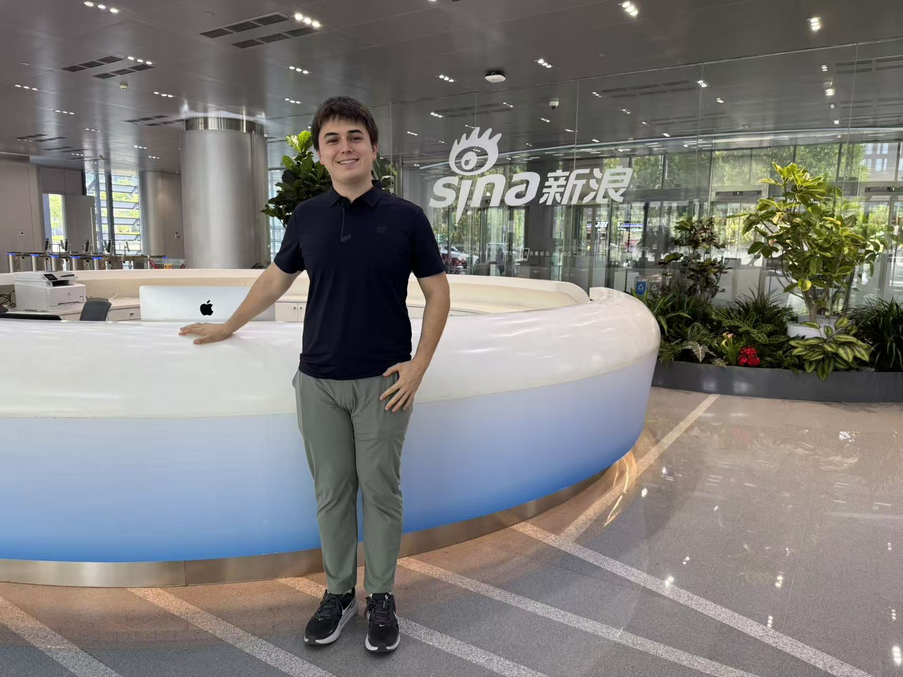

Software Engineer Intern
Weibo, Sina Corporation
June 2025 – August 2025 — Beijing, China
I spent the summer in Beijing building an AI-driven auto-reply pipeline in Python, one of several running in parallel against millions of real Weibo posts. Most of the work was iteration: prompt and pipeline design went through weekly review cycles with the project manager and a cohort of fellow interns, and every round cut down another failure mode.
The part that stretched me most had nothing to do with code. Each week I co-authored technical reports in Mandarin, documenting what the pipeline got wrong and what we changed in response. Writing honestly about failure is hard enough in your first language.
